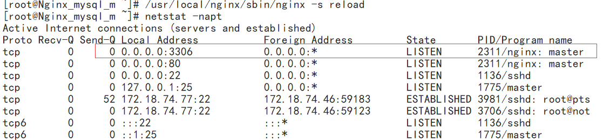
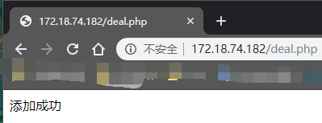
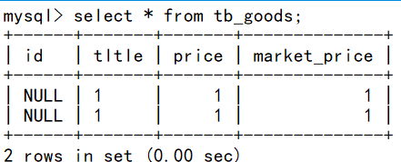
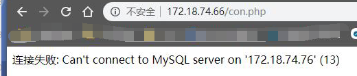

环境介绍
| 主机名称 |
安装软件 |
ip地址 |
| nginx_mysql_m |
keepalived+nginx |
172.18.74.77 |
| nginx_mysql_s |
keepalived+nginx |
172.18.74.70 |
| mysql1 |
mysql、mysql-server |
172.18.74.76 |
| mysql2 |
mysql、mysql-server |
172.18.74.71 |
keepalived配置
keepalived的配置和上一篇的类似,也是主从配置
在nginx_mysql_m中keeplived配置
1
2
3
4
5
6
7
8
9
10
11
12
13
14
15
16
17
18
19
20
21
22
23
24
25
26
27
28
29
30
31
32
33
34
35
36
37
38
39
40
41
42
43
44
45
46
47
48
49
50
51
52
53
54
55
56
57
58
| ! Configuration File for keepalived
global_defs {
notification_email {
1070481109@qq.com #这里是故障会给谁发邮件
}
notification_email_from Alexandre.Cassen@firewall.loc
smtp_server 127.0.0.1 #邮件服务器的地址
smtp_connect_timeout 30
router_id xu_ka_web_m #路由的id 一般写主机名
vrrp_skip_check_adv_addr
#vrrp_strict
vrrp_garp_interval 0
vrrp_gna_interval 0
}
vrrp_script chk_nginx {
script "/etc/keepalived/nginx_check.sh" # 检查nginx状态的脚本
interval 2
weight 3
}
vrrp_instance VI_1 { #vrrp实例定义部分
state MASTER #设置lvs的状态，MASTER和BACKUP两种，必须大写
interface ens160 #设置对外服务的接口
virtual_router_id 51 #设置虚拟路由标示，这个标示是一个数字，同一个vrrp实例使用唯一标示
priority 100 #定义优先级，数字越大优先级越高，在一个vrrp——instance下，master的优先级必须大于backup
advert_int 1 #设定master与backup负载均衡器之间同步检查的时间间隔，单位是秒
authentication { #设置验证类型和密码
auth_type PASS #主要有PASS和AH两种
auth_pass 1111 #验证密码，同一个vrrp_instance下MASTER和BACKUP密码必须相同
}
virtual_ipaddress { #设置虚拟ip地址，可以设置多个，每行一个
172.18.74.182
}
track_script { ## 将 track_script 块加入 instance 配置块
chk_nginx
}
}
virtual_server 172.18.74.182 80 {
delay_loop 6
lb_algo rr
lb_kind NAT
persistence_timeout 50
protocol TCP
real_server 172.18.74.64 80 {
weight 1
TCP_CHECK{
connect_timeout 3
nb_get_retry 3
delay_before_retry 3
connect_port 80
}
}
}
|
在nginx_mysql_s中
1
2
3
4
5
6
7
8
9
10
11
12
13
14
15
16
17
18
19
20
21
22
23
24
25
26
27
28
29
30
31
32
33
34
35
36
37
38
39
| ! Configuration File for keepalived
global_defs {
notification_email {
root@localhost
}
notification_email_from keepalived@localhost
smtp_server 127.0.0.1
smtp_connect_timeout 30
router_id nginx_mysql_s
vrrp_skip_check_adv_addr
#vrrp_strict
vrrp_garp_interval 0
vrrp_gna_interval 0
}
vrrp_script chk_nginx {
script "/etc/keepalived/nginx_check.sh" # 检查nginx状态的脚本
interval 2
weight 3
}
vrrp_instance VI_1 {
state BACKUP
interface ens160
virtual_router_id 66
priority 90 #backup这里要比100小
advert_int 1
authentication {
auth_type PASS
auth_pass 1111
}
virtual_ipaddress {
172.18.74.183
}
track_script {
chk_nginx
}
}
|
nginx的配置
因为这里nginx监听的是3306的端口，不需要web服务所以配置文件较简单，但是需要用到stream模块
在配置的时候需要添加上–with–stream
./configure --add-module=../ngx_cache_purge-2.3 --prefix=/usr/local/nginx --with-http_ssl_module --with-stream --with-pcre=../pcre-8.41 --with-zlib=../zlib-1.2.11 --with-openssl=../openssl-1.0.2o
其他和上一篇的安装方法一样
修改nginx配置文件
1
2
3
4
5
6
7
8
9
10
11
12
13
14
15
| stream {
upstream mysql {
server 172.18.74.76:3306 weight=5 max_fails=3 fail_timeout=30s;
server 172.18.74.71:3306 weight=5 max_fails=3 fail_timeout=30s;
}
server {
listen 3306;
proxy_connect_timeout 1s;
proxy_timeout 3s;
proxy_pass mysql;
}
}
|
启动nginx
/usr/local/nginx/sbin/nginx
netstat -napt

发现nginx已经被成功监听
backup的nginx配置相同
mysql数据库配置
Mysql主主配置
具体可以参考我的这篇文章
基于web页面的测试
cd /var/www/html
vim con.php
如果系统中没有php环境可以参考我的这篇文章php环境搭建
1
2
3
4
5
6
7
8
9
10
11
12
13
14
| <?php
$servername = "172.18.74.76";
$username = "web";
$password = "123456";
$conn = new mysqli($servername, $username, $password);
if ($conn->connect_error) {
die("连接失败: " . $conn->connect_error);
}
echo "连接成功";
?>
|
浏览器访问web的ip/con.php
mysql2同理
然后在数据库db_jd里创建表,为接下来的实验做好准备
mysql > create table tb_goods (tltle VarChar(40), price Decimal(10), market_price Decimal(10));
在web服务器编写接口程序连接mysql，并写一个能插入数据到数据库的表单
vim coon.php
1
2
3
4
5
6
7
8
| <?php
mysql_connect('172.18.74.76','web','123456');
mysql_select_db('db_jd');
mysql_query('set names utf8');
?>
|
vim index.php
1
2
3
4
5
6
7
8
9
10
11
12
13
14
15
16
17
18
19
| <html lang="en">
<head>
<meta http-equiv="Content-Type" content="text/html;charset=UTF-8" />
<title>产品添加-JD产品管理系统</title>
</head>
<body>
<h3>JD产品管理</h3>
<form action="deal.php" method="post" enctype="multipart/form-data">
图书名称：<input type='text' name='title' />
<hr />
销售价格：<input type="text" name='price' />
<hr />
市场价格：<input type="text" name='market_price' />
<hr />
<input type="submit" name="submit" value="添加" />
<input type="reset" name="reset" value="重置" />
</form>
</body>
</html>
|
vim deal.php
1
2
3
4
5
6
7
8
9
10
11
12
13
14
15
16
17
18
19
20
21
| <?php
header('Content-type:text/html; charset=utf-8');
if(isset($_POST['submit'])) {
$title = $_POST['title'];
$price = $_POST['price'];
$market_price = $_POST['market_price'];
include 'coon.php';
$sql = "insert into tb_goods values ('$title','$price','$market_price')";
$result = mysql_query($sql);
if($result) {
echo '添加成功';
} else {
echo '添加失败';
}
}
?>
|
访问webvip的地址
插入数据


报错指南:

原因： SELinux 不让 httpd 访问外网
在本地可以连接成功但是外网访问不了
getsebool -a | grep httpd
发现 httpd_can_network_connect --> off
setsebool httpd_can_network_connect 1